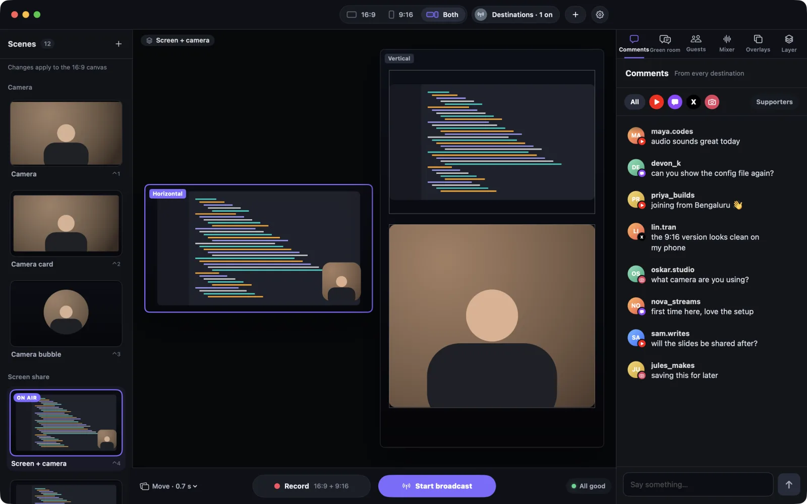
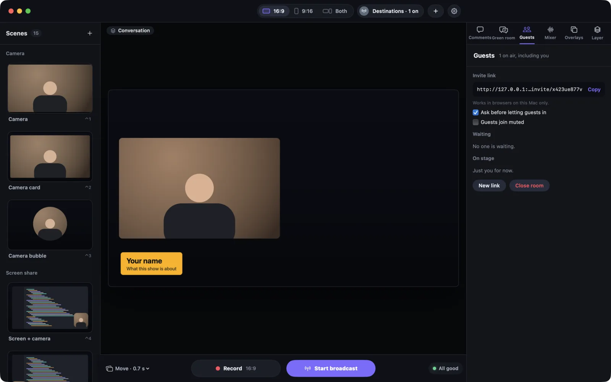
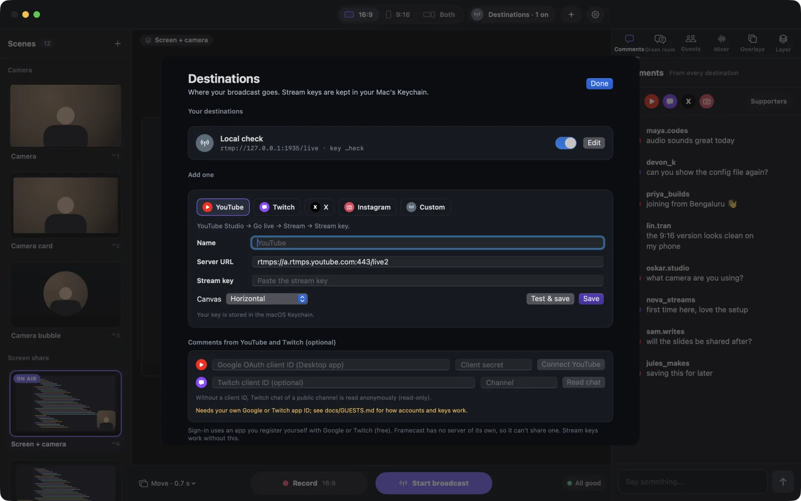
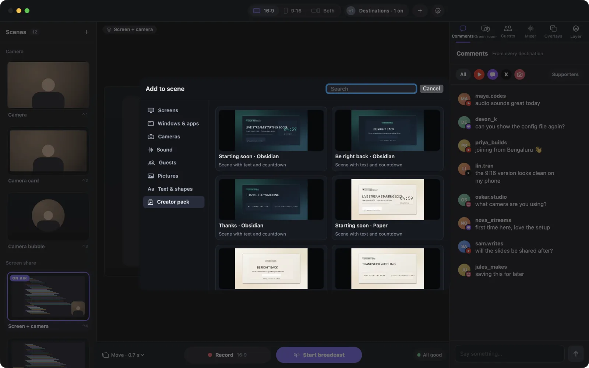
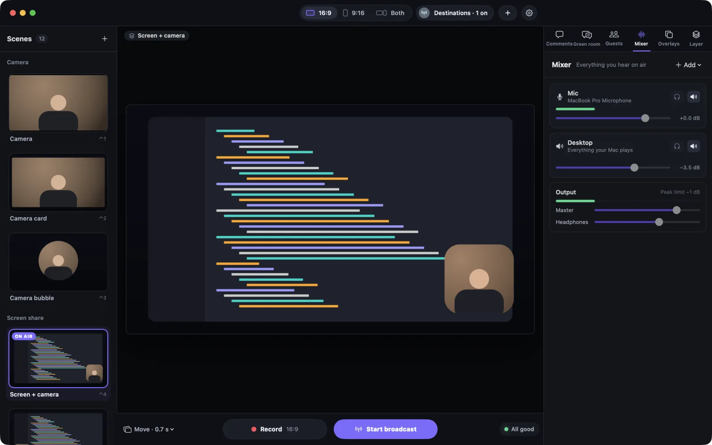
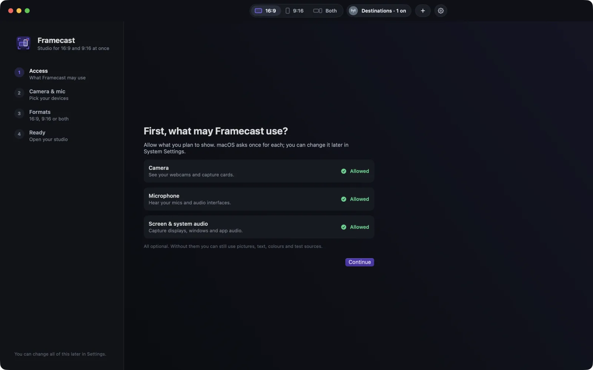
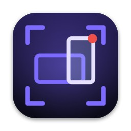

Two canvases, one clock
16:9 and 9:16 are rendered together, frame for frame. Drag, resize and snap layers right on the canvas, and undo any edit with ⌘Z.
Free and open source, for macOS
A live studio for your Mac that streams and records a 16:9 and a 9:16 canvas at once. Its AI director follows what you say, changes the layout and brings in your graphics as you reach each topic. Don't like a switch? One shortcut takes it back.
Illustration: a presenter is live on a 16:9 and a 9:16 canvas at the same time. As they talk, Framecast's AI director moves from the camera to a screen share, then a roadmap graphic with a round camera bubble, then a bar chart with the camera beside it. When it makes the chart full screen, the presenter presses Control Option Command U and the change is undone.
The studio
Framecast renders a 16:9 and a 9:16 canvas on the same clock, so your landscape stream and your vertical one are the same show, frame for frame. Switch a scene and both change, each laid out for its own shape. Record them side by side, or send each one to its own destinations.






How the AI director works
You don't need a script, and you don't need a hand on the switcher. Here's what happens between your notes and the stream.
In Rundown › New show, jot down your topics, what you want people to take away and a few lines you might say. Not a script.
Hand the brief to Claude Desktop or Claude Code on your own Claude plan. It writes the outline and makes the visuals: roadmaps, bar charts, gauges, checklists, cards and reference pictures, drawn by Framecast in your show's style.
Turn on Listen and pick Auto. Speech recognition runs on your Mac. Every 6 seconds while you talk, a small model on your Claude or OpenAI key reads the outline and the last 90 seconds of what you said, as text. About $0.10–0.50 per show-hour.
It finds the topic you're on, even if you jump around, ticks off what you've covered and puts up the matching graphic with a fresh look. ⌃⌥⌘U undoes the last change. Suggest mode asks first.
The presenter view lists your topics and ticks them off as you cover them. It stays out of the stream and out of other apps' screen captures.
Framecast splits it into parts, each starting with a cue line. Say the cue and it switches, or suggests the switch. The prompter follows your voice in large type.
Listen can follow English and Hindi mixed in the same sentence. The Hindi model downloads from Apple once.
Following your voice needs macOS 26 or later. On macOS 14 and 15 you can still move through a show by hand with ⌃⌥⌘T.
Features
All of it is in the free download. No account, no subscription, no paywall.
16:9 and 9:16 are rendered together, frame for frame. Drag, resize and snap layers right on the canvas, and undo any edit with ⌘Z.
Each canvas goes to its own file, side by side, as MOV, MP4 or MKV. Markers and scene changes become YouTube chapters, and Clip saves the last 30 seconds in both shapes.
Send each canvas wherever you like. Stream keys stay in your Mac's Keychain, and a pre-flight check tests sound, cameras and disk space first.
Camera, camera bubble, screen with camera, guest panels and more. Pick from 60 backgrounds, from aurora and neon to rooms and nature.
Name tags, headlines, thank-you cards and QR codes animate in over any scene, each on its own shortcut. The creator pack adds intro, break and outro cards with a live countdown.
Plan a show from a brief or a rough script, then let the director switch looks and graphics while you talk. It runs on your own Claude or OpenAI key. Claude Desktop and Claude Code can also drive Framecast through a control link that stays on your Mac.
Every decision is logged in the show's folder
Your topics, ticked off as you go, in a window only you see. The prompter scrolls your script in large type as you speak, and mirrors for teleprompter glass.
Send a link. Guests open it, check their camera and ask to join, and you let each person in. Run it on your Mac, your Wi-Fi, or anywhere through your own LiveKit Cloud project.
Comments land in one list. Click one to put it on screen. YouTube and Twitch chat use a free app ID you register yourself.
No account, no analytics, no update checks. It only connects where you point it: your stream destinations, and the AI, chat or guest services you turn on.
Open source
Read the code, build it yourself, change what you don't like. Framecast has no server of its own. It only connects where you point it, and you can check that in the code.
git clone https://github.com/DhananjaySarathe/framecast-studio
cd framecast-studio
./scripts/build_app.sh
open build/Framecast.appNeeds the Xcode Command Line Tools (Swift 6). Full Xcode isn't needed.
Download
Free. It runs on your Mac, with no account and no tracking.

Framecast 1.0.0
Download for MacFramecast.dmg · 71 MBAll versions and release notes
00432793fd93e0367f47147b74931e91e758782c9da070085bc4e4700a120220
To check your copy, run shasum -a 256 ~/Downloads/Framecast.dmg in Terminal and compare.
Framecast isn't signed with a paid Apple developer account, so macOS asks you to confirm once. After that it opens like any other app.
macOS 15 or later
Open System Settings › Privacy & Security, scroll down to Security and click Open Anyway next to Framecast. Confirm with your password or Touch ID, then click Open.
macOS 14 Sonoma
Control-click Framecast in Applications, choose Open, then click Open again.
Following your voice needs macOS 26 or later. Everything else works on macOS 14 and up. Prefer to build it yourself? The source is on GitHub.